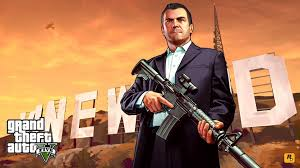
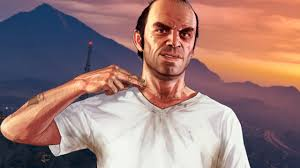
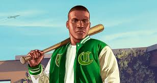

GTA V es un juego de acción en un mundo abierto ambientado en Los Santos, una versión ficticia de Los Ángeles. Sigue las historias entrelazadas de tres protagonistas: Michael, un ex ladrón de bancos; Franklin, un joven que busca escapar de la vida criminal; y Trevor, un narcotraficante violento. Los jugadores alternan entre estos personajes en una serie de misiones que incluyen robos, tiroteos y más. .
| Michael |  | Es un ex ladrón de bancos retirado que vive bajo el programa de protección de testigos en Los Santos, inspirado en Los Angeles. A pesar de sus intentos de llevar una vida tranquila y legal con su familia, se encuentra insatisfecho y aburrido. |
| Trevor |  | Es un ex compañero de crimen de Michael, y es el personaje más impredecible y violento del trío. Vive en una caravana en las afueras de Los Santos y dirige una pequeña empresa de narcotráfico. |
| Franklin |  | Es un joven afroamericano que trabaja como repo man para un concesionario de autos en Los Santos. Está buscando una salida de su vida de crimen y violencia en el barrio donde creció |